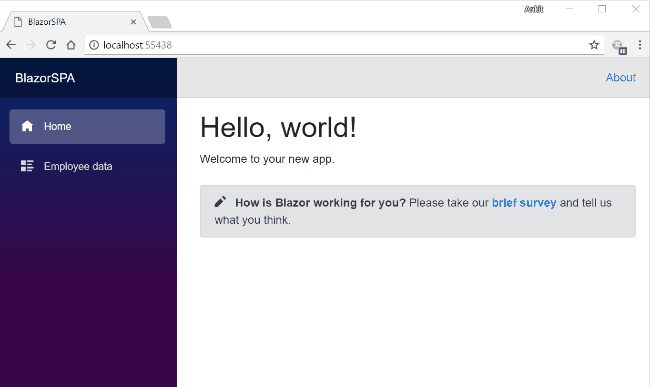
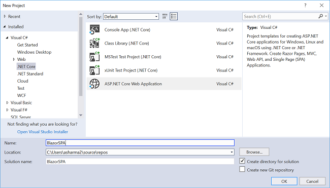
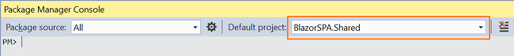
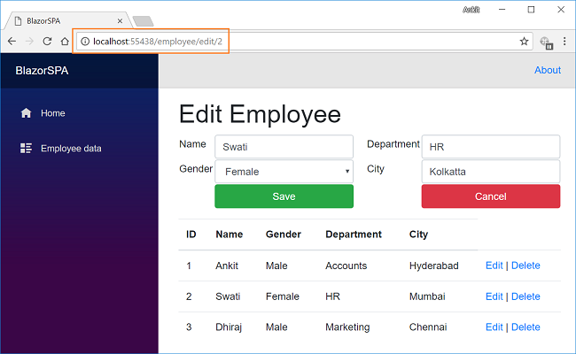
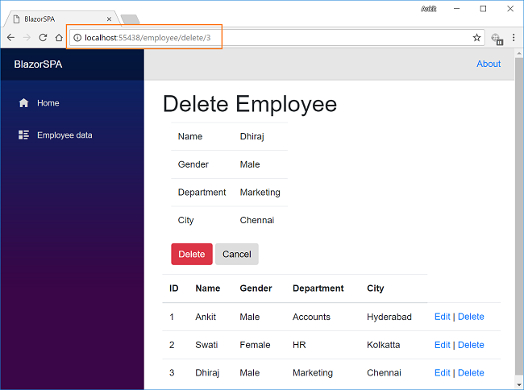
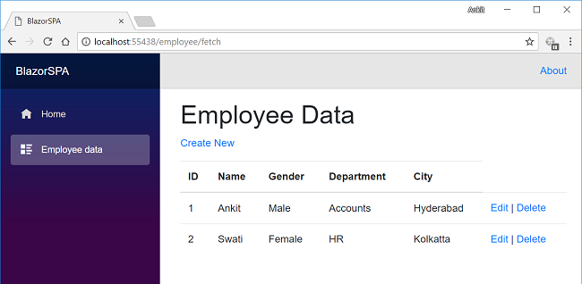

Creating An SPA Using Blazor
Introduction
In this article, we are going to create a Single Page Application (SPA) using Razor pages in Blazor with the help of Entity Framework Core database first approach. Single-Page Applications are web application that load a single HTML page and dynamically update that page as the user interacts with the app. We will be creating a sample Employee Record Management System and perform CRUD operations on it.
We will be using Visual Studio 2017 and SQL Server 2014.
Take a look at the final application.

Prerequisites
- Install .NET Core 2.1 Preview 2 SDK from here
- Install Visual Studio 2017 v15.7 or above from here
- Install ASP.NET Core Blazor Language Services extension from here
- SQL Server 2008 or above
Blazor framework is not supported by versions below Visual Studio 2017 v15.7.
Creating Table
We will be using a DB table to store all the records of employees.
Open SQL Server and use the following script to create Employee table.
CREATE TABLE Employee ( EmployeeID int IDENTITY(1,1) PRIMARY KEY, Name varchar(20) NOT NULL , City varchar(20) NOT NULL , Department varchar(20) NOT NULL , Gender varchar(6) NOT NULL )
CREATETABLEEmployee ( EmployeeIDintIDENTITY(1,1) PRIMARYKEY, Namevarchar(20) NOTNULL , Cityvarchar(20) NOTNULL , Departmentvarchar(20) NOTNULL , Gendervarchar(6) NOTNULL )
Create Blazor Web Application
Open Visual Studio and select File >> New >> Project.
After selecting the project, a “New Project” dialog will open. Select .NET Core inside Visual C# menu from the left panel. Then, select “ASP.NET Core Web Application” from available project types. Put the name of the project as BlazorSPA and press OK.

After clicking on OK, a new dialog will open asking you to select the project template. You can observe two drop-down menus at the top left of the template window. Select “.NET Core” and “ASP.NET Core 2.0” from these dropdowns. Then, select “Blazor (ASP .NET Core hosted)” template and press OK.

Now, our Blazor solution will be created. You can observe the folder structure in Solution Explorer as shown in the below image.

You can observe that we have three project files created inside this solution.
- BlazorSPA.Client – It has the client side code and contains the pages that will be rendered on the browser.
- BlazorSPA.Server – It has the server side codes such as DB related operations and web API.
- BlazorSPA.Shared – It contains the shared code that can be accessed by both client and server. It contains out Model classes.
Scaffolding the Model to the Application
We are using Entity Framework core database first approach to create our models. We will create our model class in BlazorSPA.Shared project so that it can be accessible to both client and server project.
Navigate to Tools >> NuGet Package Manager >> Package Manager Console. Select “BlazorSPA.Shared” from Default project drop-down. Refer to image below:

First, we will install the package for the database provider that we are targeting which is SQL Server in this case. Hence, run the following command,
Install-Package Microsoft.EntityFrameworkCore.SqlServer
Install-Package Microsoft.EntityFrameworkCore.SqlServer
Install-Package Microsoft.EntityFrameworkCore.Tools
Install-Package Microsoft.EntityFrameworkCore.Tools
Scaffold-DbContext "Your connection string here" Microsoft.EntityFrameworkCore.SqlServer -OutputDir Models -Tables Employee
Scaffold-DbContext"Your connection string here" Microsoft.EntityFrameworkCore.SqlServer -OutputDir Models -Tables Employee
Do not forget to put your own connection string (inside ” “). After this command is executed successfully, you can observe a Models folder has been created and it contains two class files myTestDBContext.cs and Employee.cs. Hence, we have successfully scaffolded our Models using EF core database first approach.
At this point in time, the Models folder will have the following structure.

Creating Data Access Layer for the Application
Right-click on BlazorSPA.Server project and then select Add >> New Folder and name the folder as DataAccess. We will be adding our class to handle database related operations inside this folder only.
Right click on DataAccess folder and select Add >> Class. Name your class EmployeeDataAccessLayer.cs.
Open EmployeeDataAccessLayer.cs and put the following code into it.
using BlazorSPA.Shared.Models; using Microsoft.EntityFrameworkCore; using System; using System.Collections.Generic; using System.Linq; using System.Threading.Tasks; namespace BlazorSPA.Server.DataAccess { public class EmployeeDataAccessLayer { myTestDBContext db = new myTestDBContext(); //To Get all employees details public IEnumerable<Employee> GetAllEmployees() { try { return db.Employee.ToList(); } catch { throw; } } //To Add new employee record public void AddEmployee(Employee employee) { try { db.Employee.Add(employee); db.SaveChanges(); } catch { throw; } } //To Update the records of a particluar employee public void UpdateEmployee(Employee employee) { try { db.Entry(employee).State = EntityState.Modified; db.SaveChanges(); } catch { throw; } } //Get the details of a particular employee public Employee GetEmployeeData(int id) { try { Employee employee = db.Employee.Find(id); return employee; } catch { throw; } } //To Delete the record of a particular employee public void DeleteEmployee(int id) { try { Employee emp = db.Employee.Find(id); db.Employee.Remove(emp); db.SaveChanges(); } catch { throw; } } } }
using BlazorSPA.Shared.Models; using Microsoft.EntityFrameworkCore; using System; using System.Collections.Generic; using System.Linq; using System.Threading.Tasks; namespace BlazorSPA.Server.DataAccess { public class EmployeeDataAccessLayer { myTestDBContext db = new myTestDBContext(); //To Get all employees details public IEnumerable<Employee> GetAllEmployees() { try { return db.Employee.ToList(); } catch { throw; } } //To Add new employee record public void AddEmployee(Employee employee) { try { db.Employee.Add(employee); db.SaveChanges(); } catch { throw; } } //To Update the records of a particluar employee public void UpdateEmployee(Employee employee) { try { db.Entry(employee).State = EntityState.Modified; db.SaveChanges(); } catch { throw; } } //Get the details of a particular employee public Employee GetEmployeeData(int id) { try { Employee employee = db.Employee.Find(id); return employee; } catch { throw; } } //To Delete the record of a particular employee public void DeleteEmployee(int id) { try { Employee emp = db.Employee.Find(id); db.Employee.Remove(emp); db.SaveChanges(); } catch { throw; } } } }
Here we have defined methods to handle database operations. GetAllEmployees will fetch all the employee data from Employee Table. Similarly, AddEmployee will create a new employee record and UpdateEmployee will update the record of an existing employee. GetEmployeeData will fetch the record of the employee corresponding to the employee ID passed to it and DeleteEmployee will delete the employee record corresponding to the employee id passed to it.
Adding the web API Controller to the Application
Right click on BlazorSPA.Server/Controllers folder and select Add >> New Item. An “Add New Item” dialog box will open. Select ASP.NET from the left panel, then select “API Controller Class” from templates panel and put the name as EmployeeController.cs. Click Add.

This will create our API EmployeeController class.
We will call the methods of EmployeeDataAccessLayer class to fetch data and pass on the data to the client side.
Open EmployeeController.cs file and put the following code into it.
using System; using System.Collections.Generic; using System.Linq; using System.Threading.Tasks; using BlazorSPA.Server.DataAccess; using BlazorSPA.Shared.Models; using Microsoft.AspNetCore.Mvc; namespace BlazorSPA.Server.Controllers { public class EmployeeController : Controller { EmployeeDataAccessLayer objemployee = new EmployeeDataAccessLayer(); [HttpGet] [Route("api/Employee/Index")] public IEnumerable<Employee> Index() { return objemployee.GetAllEmployees(); } [HttpPost] [Route("api/Employee/Create")] public void Create([FromBody] Employee employee) { if (ModelState.IsValid) objemployee.AddEmployee(employee); } [HttpGet] [Route("api/Employee/Details/{id}")] public Employee Details(int id) { return objemployee.GetEmployeeData(id); } [HttpPut] [Route("api/Employee/Edit")] public void Edit([FromBody]Employee employee) { if (ModelState.IsValid) objemployee.UpdateEmployee(employee); } [HttpDelete] [Route("api/Employee/Delete/{id}")] public void Delete(int id) { objemployee.DeleteEmployee(id); } } }
using System; using System.Collections.Generic; using System.Linq; using System.Threading.Tasks; using BlazorSPA.Server.DataAccess; using BlazorSPA.Shared.Models; using Microsoft.AspNetCore.Mvc; namespace BlazorSPA.Server.Controllers { public class EmployeeController : Controller { EmployeeDataAccessLayer objemployee = new EmployeeDataAccessLayer(); [HttpGet] [Route("api/Employee/Index")] public IEnumerable<Employee> Index() { return objemployee.GetAllEmployees(); } [HttpPost] [Route("api/Employee/Create")] public void Create([FromBody] Employee employee) { if (ModelState.IsValid) objemployee.AddEmployee(employee); } [HttpGet] [Route("api/Employee/Details/{id}")] public Employee Details(int id) { return objemployee.GetEmployeeData(id); } [HttpPut] [Route("api/Employee/Edit")] public void Edit([FromBody]Employee employee) { if (ModelState.IsValid) objemployee.UpdateEmployee(employee); } [HttpDelete] [Route("api/Employee/Delete/{id}")] public void Delete(int id) { objemployee.DeleteEmployee(id); } } }
At this point of time, our BlazorSPA.Server project has the following structure.

We are done with our backend logic. Therefore, we will now proceed to code our client side.
Adding Razor Page to the Application
We will add the Razor page in BlazorSPA.Client/Pages folder. By default, we have “Counter” and “Fetch Data” pages provided in our application. These default pages will not affect our application but for the sake of this tutorial, we will delete fetchdata and counter pages from BlazorSPA.Client/Pages folder.
Right click on BlazorSPA.Client/Pages folder and then select Add >> New Item. An “Add New Item” dialog box will open, select “ASP.NET Core” from the left panel, then select “Razor Page” from templates panel and name it EmployeeData.cshtml. Click Add.

This will add an EmployeeData.cshtml page to our BlazorSPA.Client/Pages folder. This razor page will have two files, EmployeeData.cshtml and EmployeeData.cshtml.cs.
Now we will add codes to these pages.
EmployeeData.cshtml.cs
Open EmployeeData.cshtml.cs and put the following code into it.
using System; using System.Collections.Generic; using System.Linq; using System.Net.Http; using System.Threading.Tasks; using BlazorSPA.Shared.Models; using Microsoft.AspNetCore.Blazor; using Microsoft.AspNetCore.Blazor.Components; using Microsoft.AspNetCore.Blazor.Services; namespace BlazorSPA.Client.Pages { public class EmployeeDataModel : BlazorComponent { [Inject] protected HttpClient Http { get; set; } [Inject] protected IUriHelper UriHelper { get; set; } [Parameter] protected string paramEmpID { get; set; } = "0"; [Parameter] protected string action { get; set; } protected List<Employee> empList = new List<Employee>(); protected Employee emp = new Employee(); protected string title { get; set; } protected override async Task OnInitAsync() { await FetchEmployee(); } protected async Task FetchEmployee() { title = "Employee Data"; empList = await Http.GetJsonAsync<List<Employee>>("api/Employee/Index"); } protected override async Task OnParametersSetAsync() { if (action == "create") { title = "Add Employee"; emp = new Employee(); } else if (paramEmpID != "0") { if (action == "edit") { title = "Edit Employee"; } else if (action == "delete") { title = "Delete Employee"; } emp = await Http.GetJsonAsync<Employee>("/api/Employee/Details/" + Convert.ToInt32(paramEmpID)); } } protected async Task CreateEmployee() { if (emp.EmployeeId != 0) { await Http.SendJsonAsync(HttpMethod.Put, "api/Employee/Edit", emp); } else { await Http.SendJsonAsync(HttpMethod.Post, "/api/Employee/Create", emp); } UriHelper.NavigateTo("/employee/fetch"); await FetchEmployee(); this.StateHasChanged(); } protected async Task DeleteEmployee() { await Http.DeleteAsync("api/Employee/Delete/" + Convert.ToInt32(paramEmpID)); UriHelper.NavigateTo("/employee/fetch"); await FetchEmployee(); this.StateHasChanged(); } protected void Cancel() { title = "Employee Data"; UriHelper.NavigateTo("/employee/fetch"); this.StateHasChanged(); } } }
using System; using System.Collections.Generic; using System.Linq; using System.Net.Http; using System.Threading.Tasks; using BlazorSPA.Shared.Models; using Microsoft.AspNetCore.Blazor; using Microsoft.AspNetCore.Blazor.Components; using Microsoft.AspNetCore.Blazor.Services; namespace BlazorSPA.Client.Pages { publicclass EmployeeDataModel : BlazorComponent { [Inject] protected HttpClient Http { get; set; } [Inject] protected IUriHelper UriHelper { get; set; } [Parameter] protectedstring paramEmpID { get; set; } = "0"; [Parameter] protectedstring action { get; set; } protected List<Employee> empList = new List<Employee>(); protected Employee emp = new Employee(); protectedstring title { get; set; } protectedoverride async Task OnInitAsync() { await FetchEmployee(); } protected async Task FetchEmployee() { title = "Employee Data"; empList = await Http.GetJsonAsync<List<Employee>>("api/Employee/Index"); } protectedoverride async Task OnParametersSetAsync() { if (action == "create") { title = "Add Employee"; emp = new Employee(); } elseif (paramEmpID != "0") { if (action == "edit") { title = "Edit Employee"; } elseif (action == "delete") { title = "Delete Employee"; } emp = await Http.GetJsonAsync<Employee>("/api/Employee/Details/" + Convert.ToInt32(paramEmpID)); } } protected async Task CreateEmployee() { if (emp.EmployeeId != 0) { await Http.SendJsonAsync(HttpMethod.Put, "api/Employee/Edit", emp); } else { await Http.SendJsonAsync(HttpMethod.Post, "/api/Employee/Create", emp); } UriHelper.NavigateTo("/employee/fetch"); await FetchEmployee(); this.StateHasChanged(); } protected async Task DeleteEmployee() { await Http.DeleteAsync("api/Employee/Delete/" + Convert.ToInt32(paramEmpID)); UriHelper.NavigateTo("/employee/fetch"); await FetchEmployee(); this.StateHasChanged(); } protectedvoid Cancel() { title = "Employee Data"; UriHelper.NavigateTo("/employee/fetch"); this.StateHasChanged(); } } }
Let us understand this code. We have defined a class EmployeeDataModel that will hold all our methods that we will use in EmployeeData.cshtml page.
We are injecting the HttpClient service to enable web API call and IUriHelper service to enable URL redirection. After this, we have defined our parameter attributes – paramEmpID and action. These parameters are used in EmployeeData.cshtml to define the routes for our page. We have also declared a property title to display the heading to specify the current action that is being performed on the page.
OnParametersSetAsync method is invoked every time the URL parameters are set for the page. We will check the value of parameter “action” to identify the current operation on the page. If the action is set to “fetch”, then we will invoke FetchEmployee method to fetch the updated list of employees from the database and refresh the UI using StateHasChanged method. We will check if the action attribute of parameter is set to “create”, then we will set the title of page to “Add Employee” and create a new object of type Employee. If the paramEmpID is not “0”, then it is either an edit action or a delete action. We will set the title property accordingly and then invoke our web API method to fetch the data for the employee id as set in paramEmpID property.
The method FetchEmployee will set the title to “Employee Data” and fetch all the employee data by invoking our web API method.
The CreateEmployee method will check if it is invoked to add a new employee record or to edit an existing employee record. If the EmployeeId property is set then it is an “edit” request and we will send a PUT request to web API. If EmployeeId is not set then it is a “create” request and we will send a POST request to web API. We will set the title property according to the corresponding value of action and then invoke our web API method to fetch the data for the employee id as set in paramEmpID property.
The DeleteEmployee method will delete the employee record for the employee id as set in paramEmpID property. After deletion, the user is redirected to “/employee/fetch” page.
In the Cancel method we will set the title property to “Employee Data” and redirect the user to “/employee/fetch” page.
EmployeeData.cshtml
Open EmployeeData.cshtml page and put the following code into it.
@page "/employee/{action}/{paramEmpID}"
@page "/employee/{action}"
@inherits EmployeeDataModel
<h1>@title</h1>
@if (action == "fetch")
{
<p>
<a href="/employee/create">Create New</a>
</p>
}
@if (action == "create" || action == "edit")
{
<form>
<table class="form-group">
<tr>
<td>
<label for="Name" class="control-label">Name</label>
</td>
<td>
<input type="text" class="form-control" bind="@emp.Name" />
</td>
<td width="20"> </td>
<td>
<label for="Department" class="control-label">Department</label>
</td>
<td>
<input type="text" class="form-control" bind="@emp.Department" />
</td>
</tr>
<tr>
<td>
<label for="Gender" class="control-label">Gender</label>
</td>
<td>
<select asp-for="Gender" class="form-control" bind="@emp.Gender">
<option value="">-- Select Gender --</option>
<option value="Male">Male</option>
<option value="Female">Female</option>
</select>
</td>
<td width="20"> </td>
<td>
<label for="City" class="control-label">City</label>
</td>
<td>
<input type="text" class="form-control" bind="@emp.City" />
</td>
</tr>
<tr>
<td></td>
<td>
<input type="submit" class="btn btn-success" onclick="@(async () => await CreateEmployee())" style="width:220px;" value="Save" />
</td>
<td></td>
<td width="20"> </td>
<td>
<input type="submit" class="btn btn-danger" onclick="@Cancel" style="width:220px;" value="Cancel" />
</td>
</tr>
</table>
</form>
}
else if (action == "delete")
{
<div class="col-md-4">
<table class="table">
<tr>
<td>Name</td>
<td>@emp.Name</td>
</tr>
<tr>
<td>Gender</td>
<td>@emp.Gender</td>
</tr>
<tr>
<td>Department</td>
<td>@emp.Department</td>
</tr>
<tr>
<td>City</td>
<td>@emp.City</td>
</tr>
</table>
<div class="form-group">
<input type="submit" class="btn btn-danger" onclick="@(async () => await DeleteEmployee())" value="Delete" />
<input type="submit" value="Cancel" onclick="@Cancel" class="btn" />
</div>
</div>
}
@if (empList == null)
{
<p><em>Loading...</em></p>
}
else
{
<table class='table'>
<thead>
<tr>
<th>ID</th>
<th>Name</th>
<th>Gender</th>
<th>Department</th>
<th>City</th>
</tr>
</thead>
<tbody>
@foreach (var emp in empList)
{
<tr>
<td>@emp.EmployeeId</td>
<td>@emp.Name</td>
<td>@emp.Gender</td>
<td>@emp.Department</td>
<td>@emp.City</td>
<td>
<a href='/employee/edit/@emp.EmployeeId'>Edit</a> |
<a href='/employee/delete/@emp.EmployeeId'>Delete</a>
</td>
</tr>
}
</tbody>
</table>
}
@page "/employee/{action}/{paramEmpID}"
@page "/employee/{action}"
@inherits EmployeeDataModel
<h1>@title</h1>
@if (action == "fetch")
{
<p>
<ahref="/employee/create">Create New</a></p>
}
@if (action == "create" || action == "edit")
{
<form>
<tableclass="form-group">
<tr>
<td>
<labelfor="Name"class="control-label">Name</label></td><td>
<inputtype="text"class="form-control"bind="@emp.Name"/></td><tdwidth="20"> </td><td>
<labelfor="Department"class="control-label">Department</label></td><td>
<inputtype="text"class="form-control"bind="@emp.Department"/></td></tr><tr>
<td>
<labelfor="Gender"class="control-label">Gender</label></td><td>
<selectasp-for="Gender"class="form-control"bind="@emp.Gender">
<optionvalue="">-- Select Gender --</option><optionvalue="Male">Male</option><optionvalue="Female">Female</option></select></td><tdwidth="20"> </td><td>
<labelfor="City"class="control-label">City</label></td><td>
<inputtype="text"class="form-control"bind="@emp.City"/></td></tr><tr>
<td></td><td>
<inputtype="submit"class="btn btn-success" onclick="@(async () => await CreateEmployee())" style="width:220px;" value="Save" /></td><td></td><tdwidth="20"> </td><td>
<inputtype="submit"class="btn btn-danger"onclick="@Cancel"style="width:220px;"value="Cancel"/></td></tr></table></form>
}
else if (action == "delete")
{
<divclass="col-md-4">
<tableclass="table">
<tr>
<td>Name</td><td>@emp.Name</td></tr><tr>
<td>Gender</td><td>@emp.Gender</td></tr><tr>
<td>Department</td><td>@emp.Department</td></tr><tr>
<td>City</td><td>@emp.City</td></tr></table><divclass="form-group">
<inputtype="submit"class="btn btn-danger" onclick="@(async () => await DeleteEmployee())" value="Delete" /><inputtype="submit"value="Cancel"onclick="@Cancel"class="btn"/></div></div>
}
@if (empList == null)
{
<p><em>Loading...</em></p>
}
else
{
<tableclass='table'>
<thead>
<tr>
<th>ID</th><th>Name</th><th>Gender</th><th>Department</th><th>City</th></tr></thead><tbody>
@foreach (var emp in empList)
{
<tr>
<td>@emp.EmployeeId</td><td>@emp.Name</td><td>@emp.Gender</td><td>@emp.Department</td><td>@emp.City</td><td>
<ahref='/employee/edit/@emp.EmployeeId'>Edit</a> |
<ahref='/employee/delete/@emp.EmployeeId'>Delete</a></td></tr>
}
</tbody></table>
}
At the top, we have defined the routes for our page. There are two routes defined.
- /employee/{action}/{paramEmpID} : This will accept action name along with employee id. This route is invoked when we perform Edit or Delete operation. When we call edit or delete action on a particular employee data, the employee id is also passed as the URL parameter.
- /employee/{action} : This will only accept the action name. This route is invoked when we create a new employee data or we fetch the records of all the employees.
We are also inheriting EmployeeDataModel class, which is defined in EmployeeData.cshtml.cs file. This will allow us to use the methods defined in EmployeeDataModel class.
After this, we are setting the title that will be displayed on our page. The title is dynamic and change as per the action that is being executed currently on the page.
We will show the “Create New” link only if the action is “fetch”. If the action is create or edit then “Create New” link will be hidden and we will display the form to get the user input. Inside the form, we have also defined two buttons “Save” and “Cancel”. Clicking on Save will invoke the “CreateEmployee” method whereas clicking on Cancel will invoke the “Cancel” method.
If the action is delete then a table will be displayed with the data of the employee on which the delete action is invoked. We are also displaying two buttons – “Delete” and “Cancel”. On clicking of Delete button, “DeleteEmployee” method will be invoked and clicking on Cancel will invoke the “Cancel” method.
At the end, we have a table to display all the employee data from the database. Each employee record will also have two action links, Edit to edit the employee record and Delete to delete the employee record. This table is always displayed on the page and we will update it after performing every action.
Adding Link to Navigation menu
The last step is to add the link to our “EmployeeData” page in the navigation menu, open BlazorSPA.Client/Shared/NavMenu.cshtml page and put the following code into it.
<div class="top-row pl-4 navbar navbar-dark">
<a class="navbar-brand" href="/">BlazorSPA</a>
<button class="navbar-toggler" onclick=@ToggleNavMenu>
<span class="navbar-toggler-icon"></span>
</button>
</div>
<div class=@(collapseNavMenu ? "collapse" : null) onclick=@ToggleNavMenu>
<ul class="nav flex-column">
<li class="nav-item px-3">
<NavLink class="nav-link" href="/" Match=NavLinkMatch.All>
<span class="oi oi-home" aria-hidden="true"></span> Home
</NavLink>
</li>
<li class="nav-item px-3">
<NavLink class="nav-link" href="/employee/fetch">
<span class="oi oi-list-rich" aria-hidden="true"></span> Employee data
</NavLink>
</li>
</ul>
</div>
@functions {
bool collapseNavMenu = true;
void ToggleNavMenu()
{
collapseNavMenu = !collapseNavMenu;
}
}
<div class="top-row pl-4 navbar navbar-dark"> <a class="navbar-brand" href="/">BlazorSPA</a> <button class="navbar-toggler" onclick=@ToggleNavMenu> <span class="navbar-toggler-icon"></span> </button> </div> <div class=@(collapseNavMenu ? "collapse" : null) onclick=@ToggleNavMenu> <ul class="nav flex-column"> <li class="nav-item px-3"> <NavLink class="nav-link" href="/" Match=NavLinkMatch.All> <span class="oi oi-home" aria-hidden="true"></span> Home </NavLink> </li> <li class="nav-item px-3"> <NavLink class="nav-link" href="/employee/fetch"> <span class="oi oi-list-rich" aria-hidden="true"></span> Employee data </NavLink> </li> </ul> </div> @functions { bool collapseNavMenu = true; void ToggleNavMenu() { collapseNavMenu = !collapseNavMenu; } }
Hence, we have successfully created a Single Page Application (SPA) using Blazor with the help of Entity Framework Core database first approach.
Execution Demo
Launch the application.
A web page will open as shown in the image below. The navigation menu on the left is showing navigation link for Employee data page.
Click on “Employee data” link, it will redirect to EmployeeData view. Here you can see all the employee data on the page. Notice the URL has “employee/fetch” appended to it.

Since we have not added any data, hence it is empty. Click on CreateNew to open “Add Employee” form to add a new employee data. Notice the URL has “employee/create” appended to it.

After inserting data in all the fields, click on “Save” button. The new employee record will be created and the Employee data table will get refreshed.

If we want to edit an existing employee record, then click on Edit action link. It will open Edit view as shown below. Here we can change the employee data. Notice that we have passed the employee id in the URL parameter.

Here we have changed the City of employee Swati from Mumbai to Kolkatta. Click on “Save” to refresh the employee data table to view the updated changes as highlighted in the image below:

Now, we will perform Delete operation on the employee named Dhiraj. Click on Delete action link which will open Delete view asking for a confirmation to delete. Notice that we have passed the employee id in the URL parameter.

Once we click on Delete button, it will delete the employee record and the employee data table will be refreshed. Here, we can see that the employee with name Dhiraj has been removed from our record.

Deploying the application
To learn how to deploy a Blazor application using IIS , refer to Blazor: Deploying An Application
On IIS 10.
Conclusion
We have created a Single Page Application with Razor pages in Blazor using the Entity Framework Core database first approach with the help of Visual Studio 2017 and SQL Server 2014. We have also performed the CRUD operations on our application.
Please download the source code and play around for better understanding.
See Also
- ASP.NET Core – Getting Started With Blazor
- ASP.NET Core – CRUD Using Blazor And Entity Framework Core
- Cascading DropDownList In Blazor Using EF Core
- Razor Page Web Application With ASP.NET Core Using ADO.NET
- ASP.NET Core – CRUD Using Angular 5 And Entity Framework Core
- ASP.NET Core – CRUD With React.js And Entity Framework Core